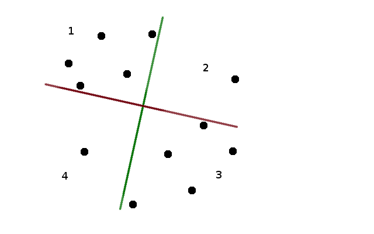
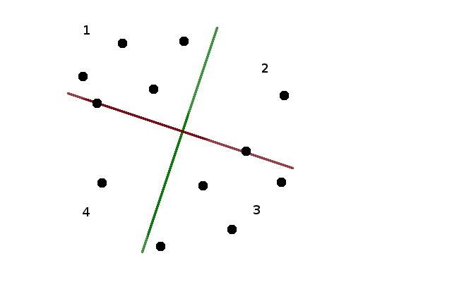
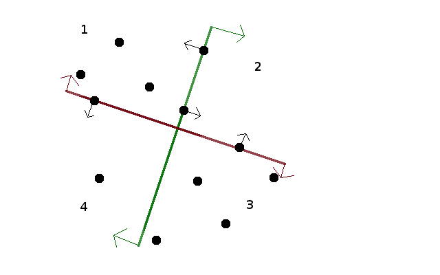

Since the four quarters formed by the two lines have to contain the same number of mines, each of the two lines has to split the set in half. Thus, if we know the inclination of the two lines (given as, e.g., the directed angle the first line forms with the horizontal axis), we can position the each line in any place such that it splits the points in half (by, for instance, sorting the points by the value of the cross-product with the direction of the line). Let's begin by choosing any angle alpha as our initial angle, and draw the two lines according to the procedure above. 
Suppose that the first quarter contains X points. The second quarter contains 2N - X, since there have to be 2N points above the red line. The third quarter will again contain X points (because there are 2N points to the right of the green line), and the fourth will contain 2N - X. So if X = N, our two lines are a correct solution. This doesn't need to be the case, though, as we can see on the figure above.
If the angle alpha we chose happens not to be a correct solution to the problem, we will try rotating the lines (by increasing alpha) until it becomes valid.
Let's consider what happens when we rotate the lines. At some moment, one or both of the lines will rotate to a point where instead of splitting the set neatly in half, the "splitting line" passes through two mines, with 2N-1 mines on either side (note that we are taking advantage of the fact that no three points are collinear, so we know the line passes through exactly two points, and not, say, four). We will call the moment at which there are two points on at least one of the splitting lines a "discontinuity". After we rotate a tiny bit more, the lines split the set neatly again.
We will prove in a moment that at any discontinuity, X changes at most by one (it can also happen to stay the same). Notice, however, that when we increase alpha by 90 degrees, the red and green lines will exchange places, which means that the first quarter (which also rotated by 90 degrees) now contains 2N-X points. Thus, somewhere in between X had to be exactly equal to N!
Let's analyze what happened after the discontinuity. Obviously, only the points that were on the dividing lines could have changed quarters at the discontinuity. One of the points that were on the red line crosses from one of quarters (1, 2) to one of quarters (4, 3), and the other point crosses in the other direction. Thus, if the discontinuity had points on one line only, X changes by at most one.
We will see that even if there were points on both lines at the discontinuity, X will still change only by one. The points on the red line go from quarters (1, 4) to quarters (2, 3). So, for X to, say, grow by two, we would have to have a point from 2 go to 3 and point from 4 go to 1 on the red line, while a point from 4 went to 3 and a point from 2 went to 1 on the green line. However, the red line (and the green line as well, but for now it's the red line that matters) is rotating clockwise - thus, it's the more leftward point that will go down, and the more rightward point that will go up — so the situation described above is impossible.
We can now use binary search to find a solution to the problem. Begin with an arbitrary angle alpha as the left bound, and alpha + 90 degrees as the right bound, assume that for the left bound X is smaller than N (if it's equal, we're done, and if it's larger, take alpha + 90 as left and alpha + 180 as right). We know somewhere between the two there is a point in which X = N. So we pick an angle midway between left and right, and check how big is X for this median angle. If it's equal to N, we are done. If it's smaller, the median angle is our new left, if it's larger, it's the new right. Proceed until success.
A single iteration, with the standard implementation, takes O(N logN) time - sort the points twice, assign each to the appropriate quarter, find X. If somebody cared enough (one doesn't need to in this problem) it can be done in O(N) time, using a faster algorithm to find the median values (either a randomized one, like quicksort, but recursing only into the bigger of two halves, or even deterministically with the median of medians algorithm.
The key question is "how many iterations of the binary search algorithm will we need to find the angle we are looking for?". This depends on the size of the interval of angles that we will try to hit. This interval will occupy the space between some two discontinuities, and each discontinuity is defined by a line connecting two of the input points - thus, the size of the interval can be expressed as an angle between two lines, each crossing two points with integral coordinates no larger than 10-6. Such an angle can be on the order of 10-12, which means we will need roughly 40 steps of the binary search. Thus, our algorithm will easily run in time.
There are three types of precision issues that can hit one on the solving of this problem.
First, it can happen that one of the lines we choose happens to be a discontinuity. This can be either worked around (by choosing a median angle a bit to the left or right - there are only finitely many discontinuities, after all), or avoided by choosing a random angle to begin with - since there are finitely many discontinuities, it's very unlikely to hit one. It's also possible to choose a deterministic angles to avoid discontinuities.
Second, the interval of angles that we are trying to find can happen to be rather small, and so we will need many iterations of the binary search. This means that we need to use relatively high precision numbers to deal with the quantities involved. It's a pretty standard issue in geometry problems, though, and shouldn't surprise anyone.
Third, there are limits on the precision with which we can output the result, and the checker for the problem will check whether the output values are correct. Since there is a finite precision of the output, there will be some rounding happening. This means that if we were unlucky, and our chosen angle happened to be quite close to the boundary of the "good" interval, the rounding can push it out of the interval. There are two things we can do to mitigate this. First, we can add a few more steps of the binary search to find a few more points within the good interval, and then choose for our answer a point that we know is relatively far from the edge. Second, we should use all the precision that we are allowed in the input. In particular, when we know the line we want to draw, we should choose the second point we output (the one other than the crossing) to be as far away from the crossing as the limits on the output allow us, to minimize the error in the angle of the line resulting from rounding.